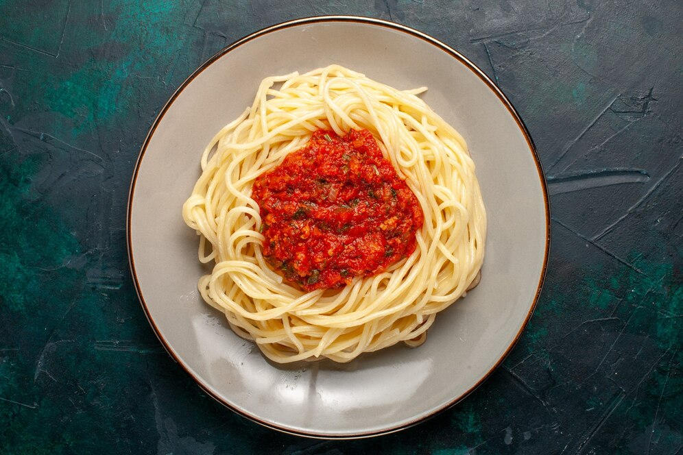

Spaghetti Bolognese

Description
This is one of the few recipes that I can make from memory. I originally got the recipe from my parents' cookbook.
Ingredients
- Mince
- Onions
- Garlic
- Canned tomatoes
- Tomato paste
- Salt
- Pepper
- Oregano
- Bay leaves
- Basil
- Red wine
Steps
- Cook mince and drain fat.
- Chop onion and garlic and soften in a pan.
- Briefly cook mince with onion and garlic.
- Add tomatoes, tomato paste, herbs and red wine.
- Bring to boil and then simmer for 45 minutes, stirring occasionally.